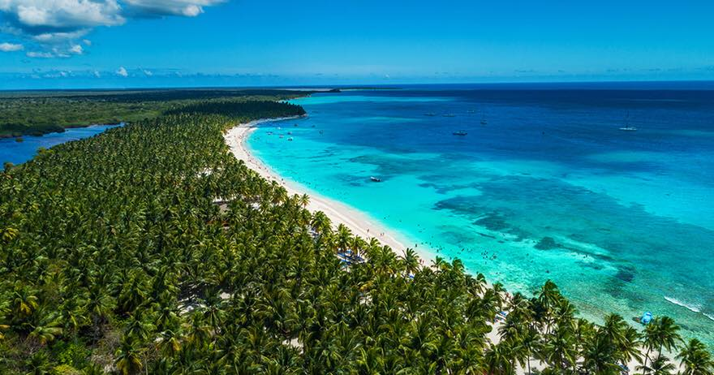

El Parque Ncional del Este, tambien conocido como Parque Nacional Cotubanama, es una de las reservas naturales mas
importantes de la Rebublica Dominicana.Este parque ofrece una rica biodiversidad y paisajes impresionantes.
A continuacion, se muestra una imagen del parque nacional del Este:
En el parque, Puedes realizar diversas actividades como:
Para mas informacion, puedes visitar los siguientes enlaces:
Este es un video sobre el Parque Nacional del Este:
"" >Escucha los sonidos de la naturaleza en el Parque Nacional del Este: